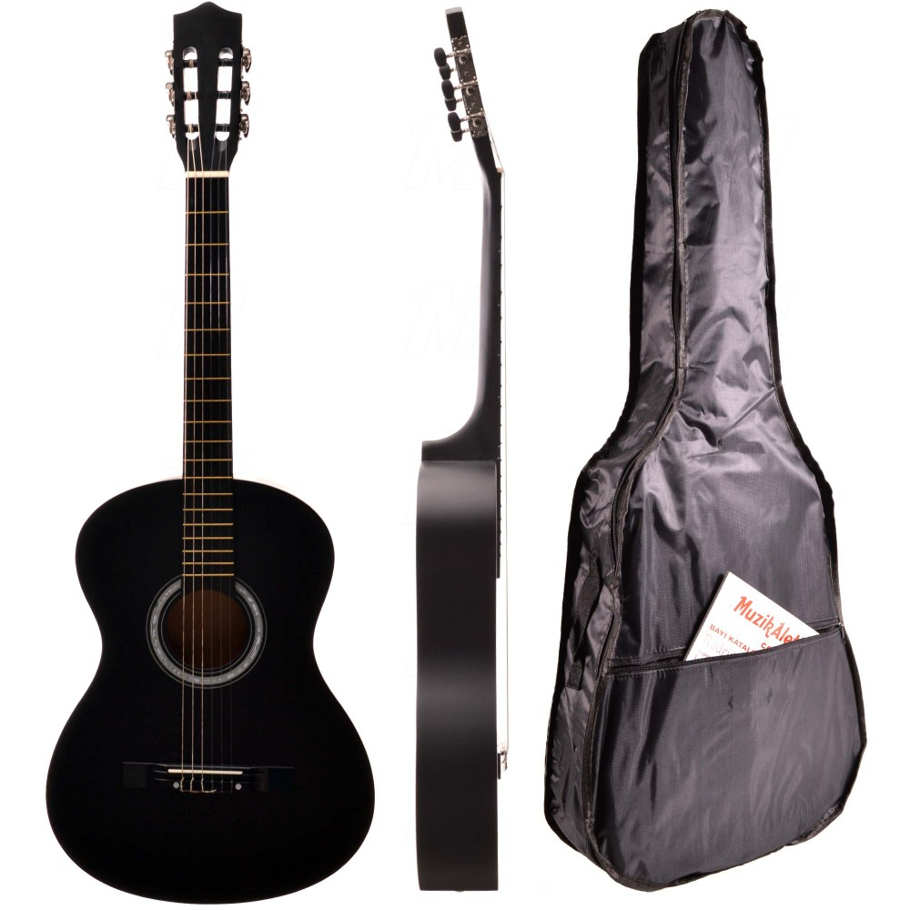
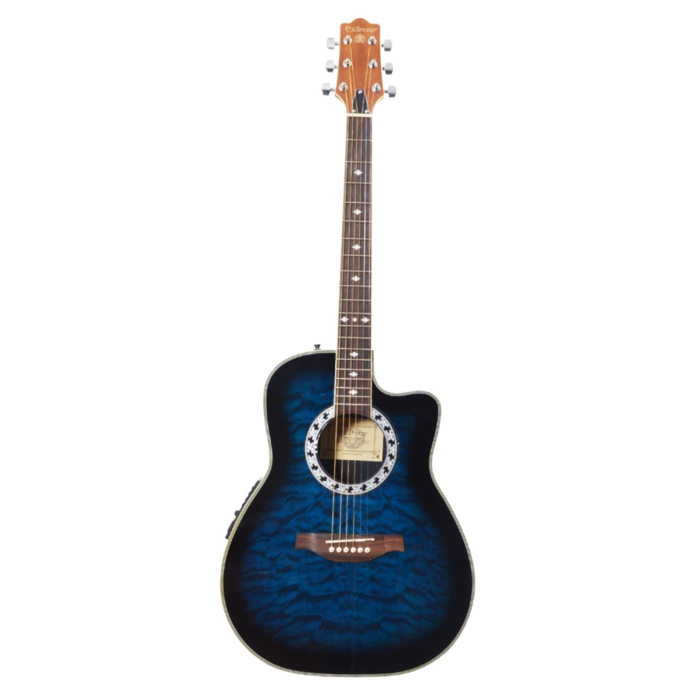
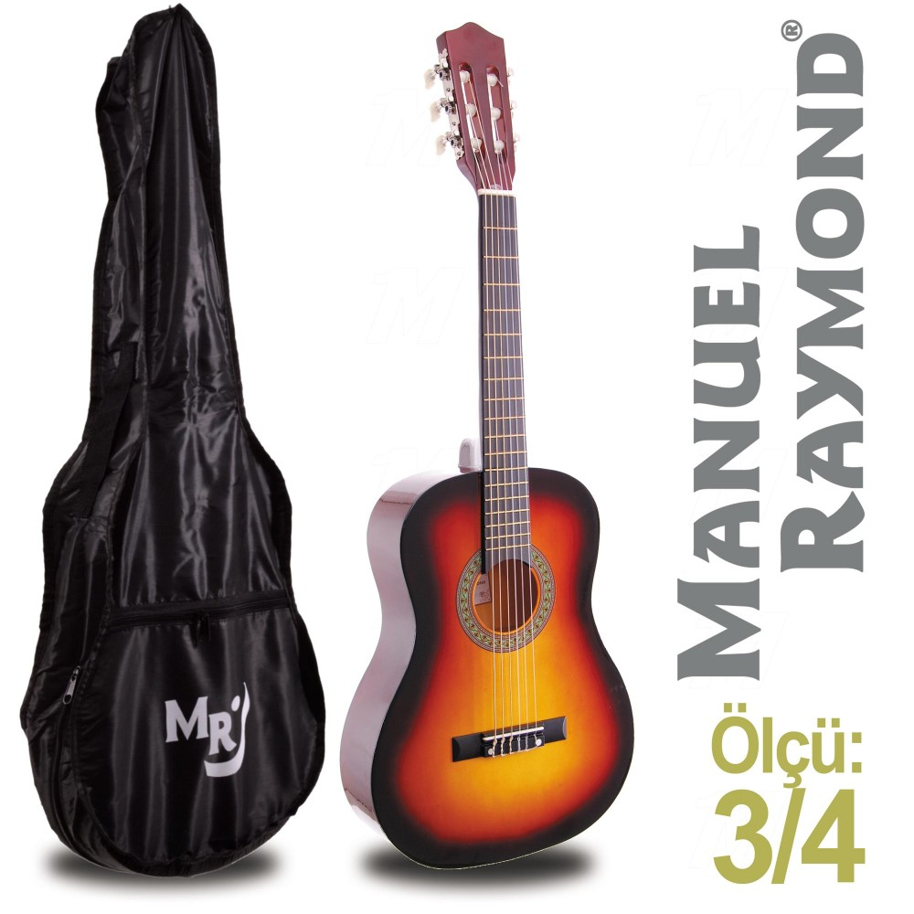

GİTAR KLASİK MANUEL RAYMOND MAT MRC275BKM
Fiyat:1,479.00
KDV Hariç: 1.253,39TL
AÇIKLAMA
GİTAR KLASİK MANUEL RAYMOND MAT MRC275BKM
Ön Kapak: Nato (Mat Siyah)
Arka Kapak: Nato (Mat Siyah)
Sap : Akça Ağaç
Ebatlar: 99X36X8,5 cm
Yetişkin boy bu gitar, başlangıc ve orta seviye gitaristler için idealdir.

GİTAR ELEKTRO AKUSTİK EXTREME
6.949,00TL
KDV Hariç: 5.888,98TL
AÇIKLAMA
Gitar Elektro Akustik Extreme XAF60EQ4BLS. Ovation Fiber Kasa
Ön Kapak: Kelebek (Gece mavisi süper harika desen ve renk)
Arka Kapak: Fiber siyah
Sap : Gül Ağaç
Eşik: Gül Ağaç
Ebatlar: 105X39X10 cm
Eqoliser: 4 band yükseticili volume kontrollü.
Teller : Daddario - USA model no: EZ890
Özellikleri: İleri seviye ve profesyonel gitaristlerin tercihidir. Kesik kasa (Cuttaway) özellikle alt perdelere ulaşmakta büyük kolaylık sağlamaktadır. Perde Sayısı: 20 Pre-amp ; 4 band ekolayzırlı profesyonel yükseltici aktif manyetik 9 voltluk pilden besleme alarak gitardan çıkan sesin süzülerek ve her türlü parazitten arındırılmış olarak yükselticiye gitmesini sağlar.

Klasik Gitar Junior Manuel Raymond
1.279,00TL
KDV Hariç: 1.083,90TL
AÇIKLAMA
Klasik Gitar Junior Manuel Raymond MRC87SB
Ön Kapak: Nato ( Sunburst)
Arka Kapak: Nato (Kahve)
Sap : Akça Ağaç
Ebatlar: 87X33X7,5 cm
Teller : 3 Adet İpek Üzerine Gümüş Sargı
3 Adet Dupont Sargı